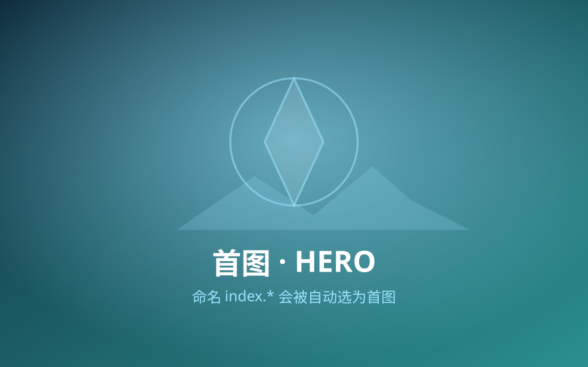
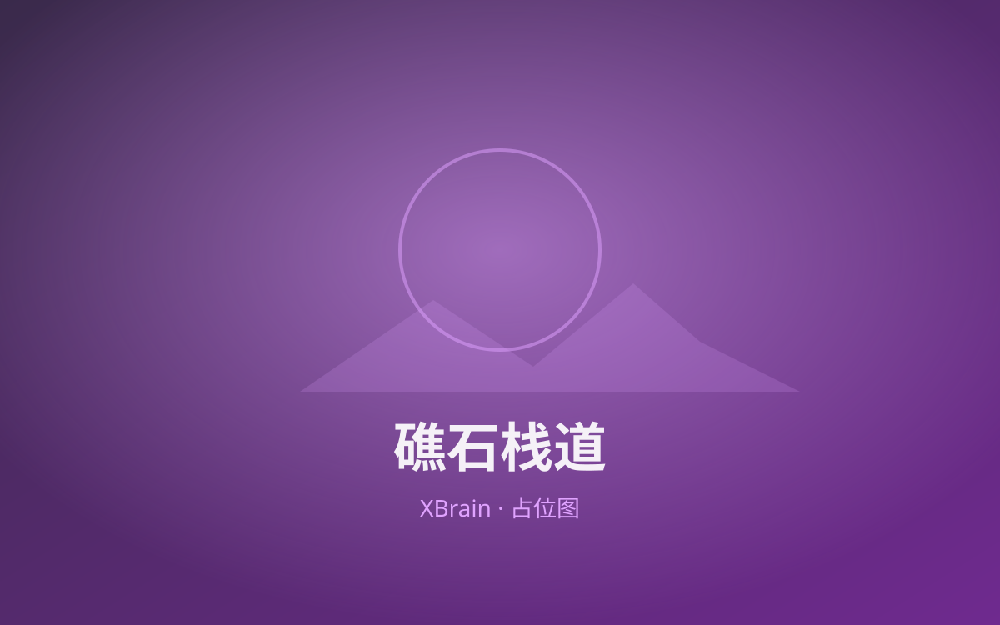
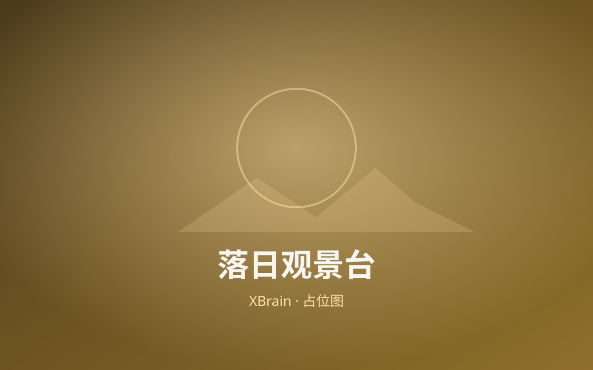
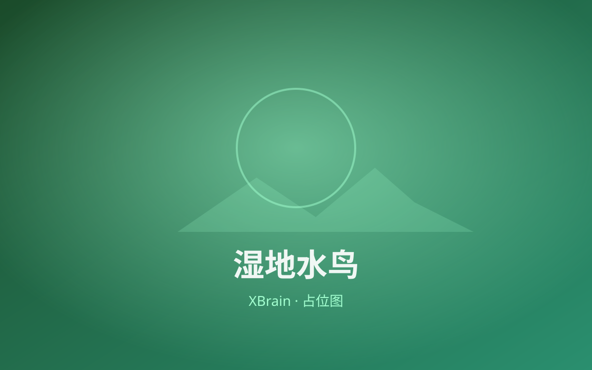
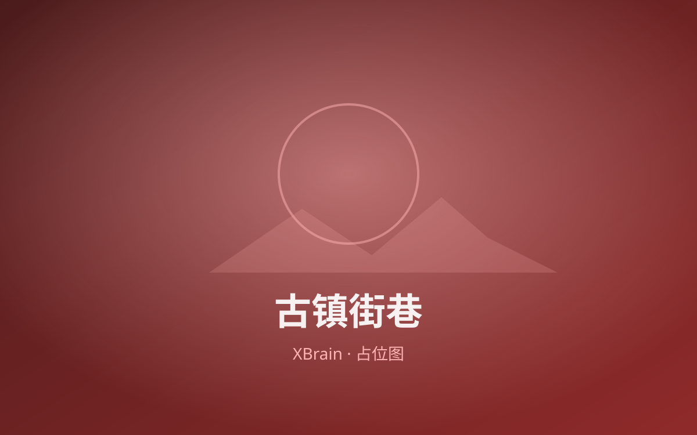

{{RECORD_HEADING}}
制定方案并执行后，在此按时间/站点记录真实行程；每章一段叙述 + 可选组图，主图命名 index.*。
{{14:30}}
{{章节标题 · 如：入园 & 湖边慢走}}
{{这段发生了什么、看到了什么、孩子/家人的反应、随手拍。口语化、真实即可，无需规划腔。}}
{{想补充的细节：停车是否好停、哪条路阴凉、哪个角落出片。}}




{{15:30}}
{{章节标题 · 如：草坪野餐 & 孩子撒欢}}
{{这一段记录：带了什么吃的、在哪坐下、孩子玩了什么、累了在哪歇。}}

